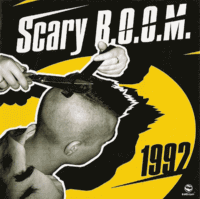

Scary B.O.O.M. - 1992 (EP, 2005)
01 - Intro (0:15)
02 - Rock The Barn (2:33)
03 - Crocodile Hunting (2:59)
04 - Nightmares (3:01)
05 - Medicine For Melancholy (1:47)
06 - Discovery (4:12)
07 - Don't Cry (2:44)
08 - Fury (4:06)
© КАП-КАН Records :: [-]
Notes
Review
077/366 (Project 366)
Pure old school sound of Psychobilly. Recorded in 1992, released in 2005 on CD.
Quite expected quality for a group of enthusiasts from early 90s. But mood is much more important. And it is pretty thematic. A bit scary, rather crazy and psycho tunes, overlapping from time to time and featured a very amusing hysterical cries and screaming voice. First songs maybe are more about (neo)Rockabilly. However, next ones (fourth and fifth tracks) are real mad Psychobilly. The sixth track "Discovery" is slightly freaky and fancy tune as for me, but is so much good for entire EP and wonder craze itself. The next song "Don't Cry" with continues for this wave, but with much more rough flavour and mist around. "Fury" end with eighth track. Really original and really scary gruff fast tempo ballad with some flows within. Rather experimental sound, but still quite oldschool and stylish.